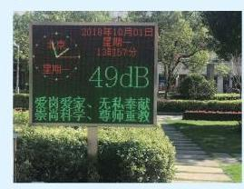

例题 1
例 1 求下列各式的值:
(1)log ；
(2)lo ;
(3) 01.
学生阅读版 / 沪教版高中数学
必修第一册
第3章幂、指数与对数 · 保留教材主线与原题
教材与正式教参整合
纳皮尔(J. Napier, 1550 - 1617), 苏格兰数学家, 对数的发明者.
想象这样一个场景, 某人在银行存入 1 万元, 若年利率为 5%，且按年计复利，经过多少年 1 万元存款才能连本带利超过 5 万元呢?
年利率为 5% 的意思是一年之后 1 万元变成 1.05 万元. 按年计复利的意思是每过一年自动将连本带利作为本金再次存入银行生息. 这样,经过 年后,存款连本带利的总数应达到 万元. 根据题意,我们要回答,当 是多少时,
实际上,如果能够找到一个数 ,使得 ,那么 就是大于 的最小整数.
抽象一下上面的问题: 设 ,要找 ,使得
①
要讨论这个问题,首先要假设 ,以保证对所有的 , 都有定义. 还要假设 ,因为如果 就恒等于 1, 在 且 时,方程①无解; 而在 时,方程①有解但不唯一.
此外,在 ,且 时,只要 ,方程 总有唯一的解.
对数的底是不等于 1 的正数.
"log"是拉丁文 logarithmus 的缩写.
这样, 在讨论对数的时候, 我们总是假设底是不等于 1 的正数,并且假设真数是正数. 另外,由定义,对数 这个记号表示满足方程 的唯一确定的数 . 因此
②
这个式子看起来很玄妙, 但不过是对数定义的另一个表达方式而已, 也充分说明对数运算是指数运算的逆运算.
由此恒等式可以推出,若两个正数 的对数 与 相等,则 ,即若同一个底的两个对数相等,则其真数必相等. 这是因为
此外,因为 ,易见
在一些特殊情况下, 可以写出对数的具体数值, 而在一般情况下, 估算对数的精确值极为困难, 需要查阅有关的对数表或利用计算器来得到对数的近似值.
例 1 求下列各式的值:
(1)log ；
(2)lo ;
(3) 01.
例 2 求下列各式中 的值:
(1) ；
(2) ；
(3) .
A. ; B. ;
C. ; D. .
(1)lo 25; (2) ；
(3) ； (4) .
(1) ； (2) .
引进对数的初衷是为了处理多位数的乘除及开方. 在本节中可以看到, 对数可以把乘除运算转变为加减运算, 并把乘方开方运算转化为乘除运算. 这为多位数的乘除及开方运算提供了一条简便的途径.
我们知道指数的运算性质: 对任意给定的正数 及实数 、 ,有
通俗地说, 指数可以把加减转化为乘除. 这个性质在对数中怎么体现呢?
在本节中,我们总假设 ,且 .
设 ,令 ,就有 , ,因此
从而, 由对数的定义, 有
由此可得下述对数运算的基本性质.
对数性质 1 当 时,
由性质 1 可以推出
从而得到
对数性质 2 当 时,
对数性质 1 与 2 可以通俗地解释为: 对数把乘除运算转化为加减运算.
设 ,令 ,则 . 由 ,得 ,从而由对数的定义, . 所以,我们有
对数性质 3 当 时,对任何给定的实数 ,
特别地,当 为大于 1 的正整数 时,乘方转化为乘; 当 时,开方转化为除. 这说明: 对数把乘方及开方分别转化为乘与除.
例 3 求下列各式的值:
(1)lo ;
(2) ；
(3) .
例 4 已知 ,用 及 表示 .
例 5 在有声世界, 声强级是表示声强度相对大小的指标. 其值 [单位: (分贝)] 定义为
其中, 为声场中某点的声强度,其单位为 (瓦/平方米), 为基准值.
(1)如果 ，求相应的声强级；
(2)声强级为 时的声强度 是声强级为 时的声强度 的多少倍?

一般地，正常交谈的声音是 ,闹市区的声音是 , 飞机起飞时的声音大约是 .
(1) ;
(2) .
(1) ； (2) ；
(3) .
下面将介绍对数换底公式. 不同底的对数可以很方便地互相转换.
如前所述,对数的底 总是为不等于 1 的正数.
设 且 为另一个底,且 . 令 ,即 . 由对数性质 3,得
因此得到
对数换底公式 当 时,
它把以 为底的对数换成两个以 为底的对数的商,其中 只与两个底的值有关,而与真数 无关.
例如，估算 ，可先应用换底公式，得
再利用计算器上的常用对数功能键,得 . 因此
例 6 求下列各式的值:
(1) ；
(2) .
例 7 设 ,且 . 求证: 若 ,则
(1) ;
(2) ( 、 、 均为不等于 1 的正数)；
(3) ；
(4) .
(1) ； (2) .
(1) ； (2) .
(1)lo 27 ; (2) ；
(3) .
(1) ；
(2) ;
(3) .
(1) ； (2) ；
(3) ; (4) ；
(5) .
(1) ；
(2) ；
(3) .
(1)lo ； (2)lo lo ；
(3) ；
(4) .
(1) ; (2) .
(1) ； (2) ；
(3) .